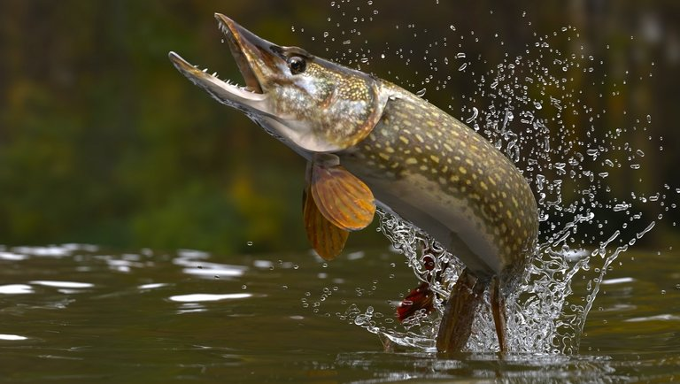

A csuka (Esox lucius) a sugarasúszójú halak (Actinopterygii) osztályának csukaalakúak (Esociformes) rendjébe, ezen belül a csukafélék (Esocidae) családjába tartozó faj. Több triviális nevet is használnak azonosítására, mint például a csukesz, a közcsuka, a mátyáscsuka (a Mátyás napján fogott példány), a bicska vagy bugylicsuka (az egynyaras 18-19 centiméter hosszúságú példányokra). A Föld északi féltekéjének hideg és mérsékelt éghajlati övében minden kontinensen megtalálható, jelentős gazdasági értéket képviselő halfaj. Természetes vizekben télen a jég alól is fogható, ezért egész évben friss halként fogyasztható.

Teste hosszúkás, erőteljes, színe halvány ezüst-aranyostól az olajzöld alapon arany foltos változatokig terjedhet, finoman pikkelyezett, halványan csíkozott, erős hátúszója teste hátsó részén van. Feje testéhez képest igen nagy és szája kacsacsőrre emlékeztet. Nagy szájának kemény alsó állkapcsa túlér a felsőn, formája lapított és mélyen vágott. Szájában éles, erős és kúpos fogak helyezkednek el, több sorban, melyek elölről hátrafelé haladva egyre nagyobbak. A farok alatti úszójának hossza és magassága hasonló a hátúszójához. A testoldal alapszíne ezüstösen barna, olajzöld, sávokban rendezett esetleg márványos, változó élénkségű sárgás foltokkal.